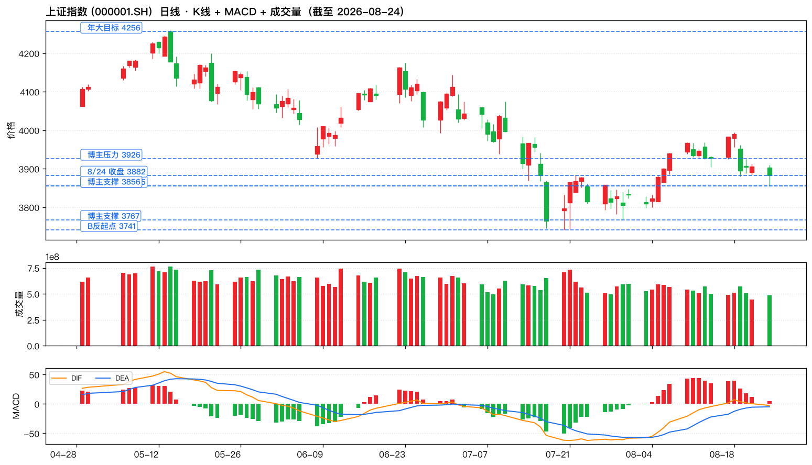
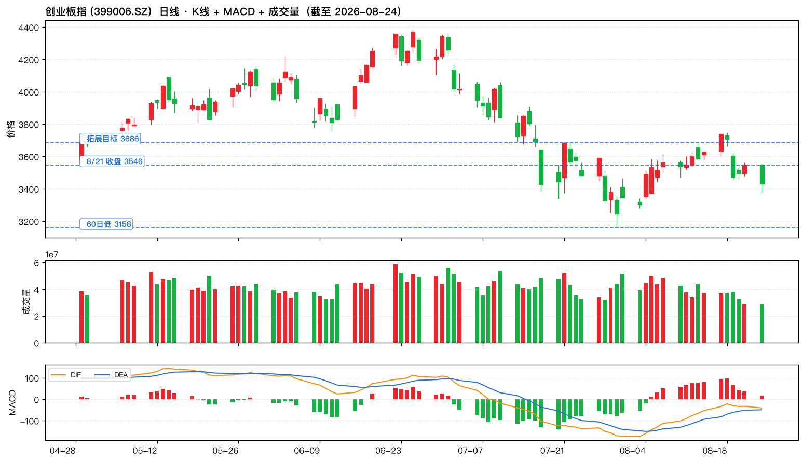
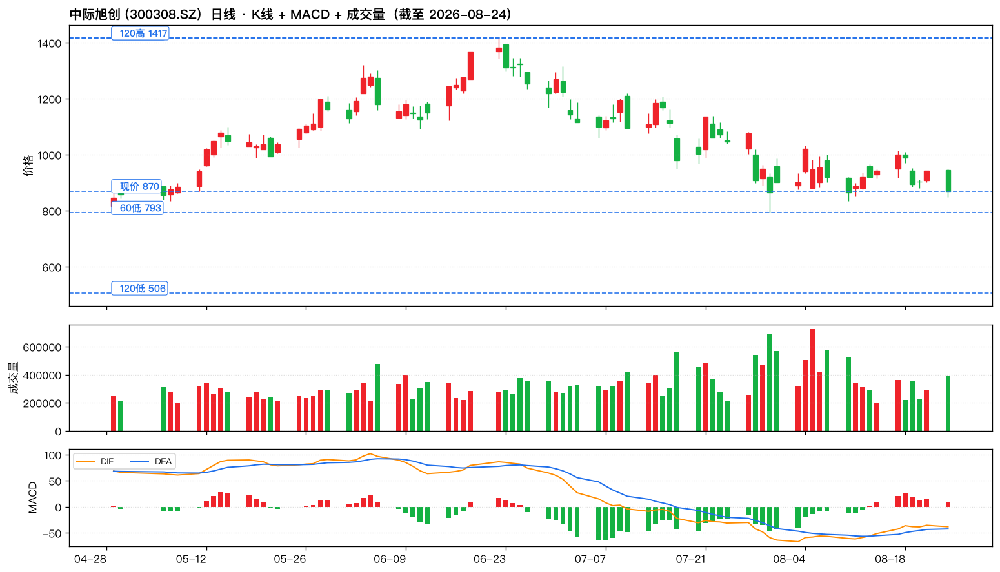
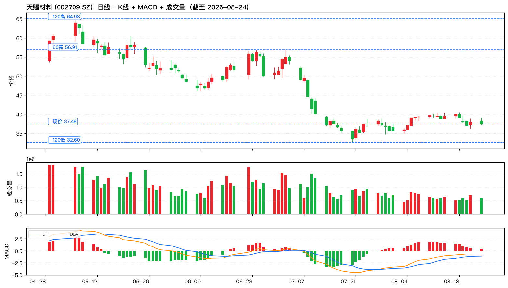
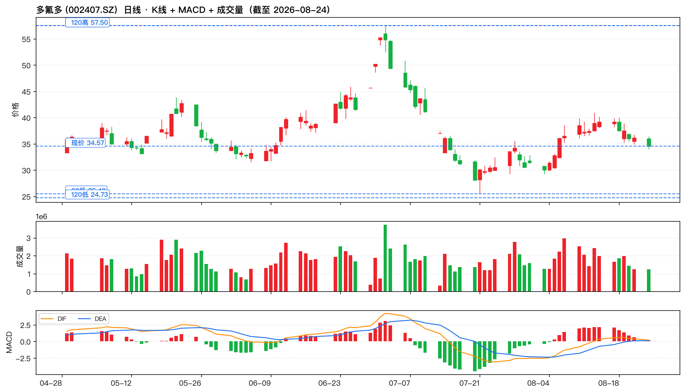
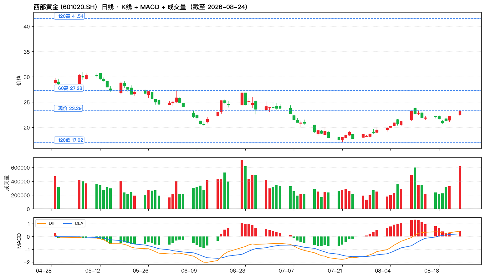
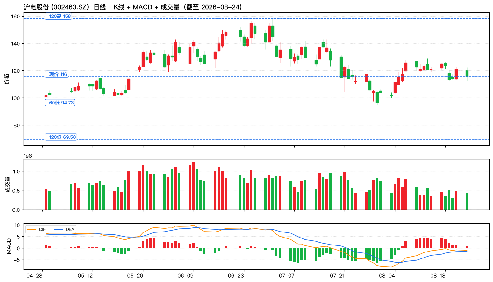
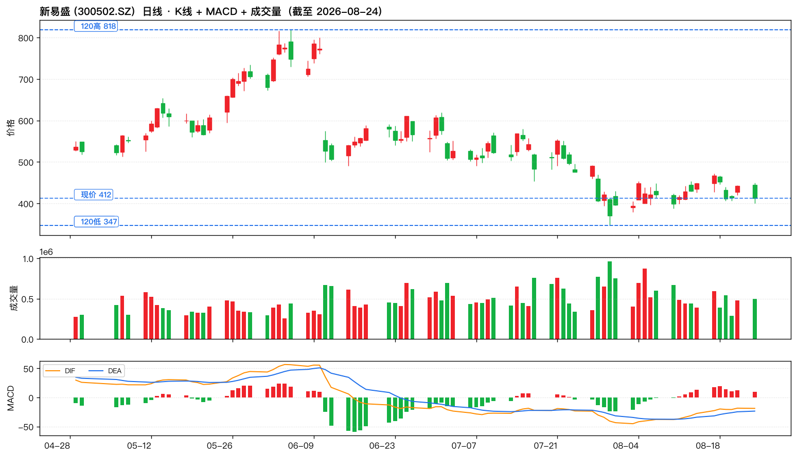

8/24 共抓取 10 条非置顶微博,其中 5 条带操盘信号。博主 8/24 立场:🔴 短期偏防御(试 3855.35 → 收 3882,资金流出 921.44 亿),但长期多头信仰不变(14:17 重申"今年只看 4256")。
| 时间 | 互动 | 信号 | 内容 |
|---|---|---|---|
| 08-24 16:38 | R:11 C:90 L:3616 | — | 西部黄金8月24日披露半年报，公司上半年实现营业收入110.43亿元，同比增长119.62%；归属于上市公司股东的净利润5.47亿元，同比增长315.67%；基本每股收益0.6001元/股。公司拟向全体股东每10股派发现金红利0.5元(含税)。 |
| 08-24 15:00 | R:65 C:859 L:10901 | 大盘判断, 技术位, 操作建议 | 今天大盘指数回撤了3856点（试3855.35点）收在3882点；按日线技术面看大盘指数3741和3767点连续的支撑位附近会有反复。明天指数需要观察3856--3926之间的取向，收到请回复666或点赞支持一下！ |
| 08-24 14:59 | R:3 C:70 L:6061 | 大盘判断, 操作建议, 行情速报 | 截止14：58两市成交了20035亿元，有3984只个股下跌，大盘资金流出921.44亿元，量能比上一交易日增加1324亿元！ |
| 08-24 14:34 | R:12 C:223 L:7688 | — | 目前看是多空小幅度折腾！ |
| 08-24 14:30 | R:45 C:728 L:10558 | — | 齐白石的虾，张大千的虎，徐悲鸿的马，王羲之的字，还有我wu2198画的线，堪称世间五绝…… 还记得不？ |
| 08-24 14:26 | R:22 C:431 L:8015 | 大盘判断 | 指数试3855.35点之后略有抵抗，暂时没有收破3856点，我们继续观察！明白666 |
| 08-24 14:21 | R:10 C:118 L:7351 | — | 按短线看，今天只有电池材料板块资金活动是明显的。 |
| 08-24 14:17 | R:152 C:1491 L:10955 | 操作建议 | 从2024年的2635和2689得双底得天下，再到3674点完成第一轮行情之后，展开ABC结构调整，再到去年4月7日3040点给大家一个字“干”，再到今年年初分析只看4256点.不管是大波浪，还是小波段，市场都符合我画的图走......所以，我会遵重市场，尊重自己的分析，起码在符合自己预期判断的前提下，不会起轻易改 ...全文 |
| 08-24 14:13 | R:6 C:419 L:7875 | — | 前面给大家分析了，下午注意看3856点得失即可......明白666 |
| 08-24 14:09 | R:293 C:864 L:11106 | 操作建议 | C一般是分梯级下探的（即C1--C5）类似第二大浪调整的步伐.....不同的是第四大浪调整之后，即使有第五大浪上涨，起码有70%--80%的股票不会有新高了，明白666 |
核心标的: 天赐材料 (002709) / 多氟多 (002407)
博主 8/24 14:21 明确表态:「按短线看,今天只有电池材料板块资金活动是明显的」 — 这是 8/24 当天博主唯一直接点名的板块,含金量最高。延续 8/22 业绩兑现主线:天赐材料半年报净利+967%(电解液价格底部回升 + 头部份额集中),多氟多(六氟磷酸锂龙头,周期反转)。逻辑:锂电中游从 2024-2025 年价格战洗牌,头部企业份额持续集中,2026H1 业绩集中爆发,周期反转信号明确。博主在 8/14 试 3903 时强调「电池/六氟磷酸锂个别上涨」, 8/24 升级为唯一直接点名。
核心标的: 西部黄金 (601020)
博主 8/24 16:38 转发:「西部黄金 8 月 24 日披露半年报,公司上半年实现营业收入 110.43 亿元,同比增长 119.62%;归属于上市公司股东的净利润 5.47 亿元,同比增长 315.67%」 — 这是 8/24 当天博主唯一明确点名的个股。催化:① 央行连续 21 月增持黄金 7608 万盎司(博主 8/8 提及)② 大盘 8/24 跌 0.61% 试 3855.35 收 3882,资金流出 921 亿(放量下跌),避险情绪上升 ③ 国际金价 2026 年持续走强。
核心标的: 中际旭创 (300308) / 新易盛 (300502) / 沪电股份 (002463)
8/24 博主未直接点评光模块,但战略面 14:17 重申「今年年初分析只看 4256 点」多头信仰未改,业绩兑现主线延续。催化:① 中际旭创 8/22 业绩 +241% 兑现(AI 算力链景气度最强证据)② 8/14 19:30 转发英伟达 200G/lane CPO 量产(产业级催化)③ 8/22 PCB 链条 德福 +580% / 东山 +64% 双兑现。光模块/PCB 是 AI 算力硬件中游业绩兑现最确定的两个子板块。


博主看点: CPO 全球龙头 · 8/22 半年报营收 417.78 亿(+182%) 净利 136.51 亿(+241%) · 10 派 12 元 · AI 算力链业绩兑现标杆

博主看点: 电解液龙头 · 8/22 半年报营收 147.10 亿(+109%) 净利 28.61 亿(+967%) · 10 派 1 元 · 8/24 14:21 博主点电池材料板块代表

博主看点: 六氟磷酸锂龙头 · 锂电中游周期反转 · 电池材料板块代表

博主看点: 8/24 16:38 博主转发半年报:营收 110.43 亿(+119%) 净利 5.47 亿(+315%) · 10 派 0.5 元 · 央行连续 21 月增持黄金 7608 万盎司共振

博主看点: AI 服务器 PCB 龙头 · 8/22 收 121.21 +6.03% 强势 · 高多层/Mini-LED/IC 载板三方向

博主看点: 1.6T 光模块二哥 · 8/22 收 442.00 +6.76% · CPO 板块代表

博主 8/24 核心立场综合:
📌 博主风控姿态:8/24 同时发出长期多头信仰 (14:17) + 短期风控 (14:09/14:59) + 关键位博弈 (15:00) + 板块点名 (14:21/16:38) 4 类信号。这是缠论大师的典型操作:大方向坚定(4256),小节奏灵活(3856-3926 区间博弈),板块轮动敏锐(电池材料/黄金)。跟单策略上:大方向跟他(4256 多头),小节奏跟他(3856 守/3926 攻),板块跟他(电池材料+黄金优先)。
⚠️ 跟单提示:博主 6/8 披露"已撤离本金+去年盈利一半,预计今年不再调回" — 自身偏防御,不动用大资金博 4256。跟单用户应以他给的关键位 + 板块方向为准,不要机械复制其仓位。第四大浪提示 70-80% 个股不会新高 → 仓位集中到博主点名的龙头(中际旭创/天赐材料/西部黄金),不要分散。大盘关键位 3856 失守需警惕进一步下行至 3767/3741。